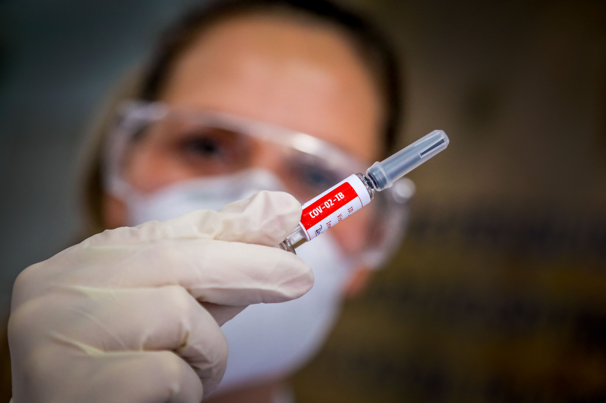

Televangelist who blamed pandemic on ‘sin of fornication’ dies of coronavirus

A conservative televangelist has died with Covid-19, months after he suggested premarital intercourse caused the coronavirus pandemic.
The reverend Irvin Baxter, who appeared on the Christian TV show ‘End of the Age’, died with the illness last Tuesday.
He had been hospitalised for a week before his death, at the age of 75, according to Endtime Ministries, the Pentecostal Christian organisation he founded.
'Irvin went on to his great reward.We celebrate his life, but at the same time, there is sorrow, there is grieving,' said Dave Robbins, his ‘End of the Age’ co-host, in a statement.
He added: 'We will continue in his legacy, sharing the message and good news.'
Baxter claimed in March that so-called 'sinful lifestyles' such as premarital intercourse, as well intercourse between same sex individuals, caused Covid-19.
He bemoaned on 'The Jim Bakker Show', another programme dedicated to end-of-times religious scenarios, that most American brides were not virgins.
Baxter was then reported to have cited 1 Corinthians 6, a Bible passage that opposes both 'the sexually immoral' and 'abusers of themselves with mankind' — or LGBT people — as
MetroWeekly reported.
'‘God is not mocked,' he told the programme.'No fornicator, no adulterer, nor effeminate, nor abuser of themselves of mankind, nor extortioner, nor drunkard.None of these shall inherit the kingdom of God.'
'If we think we can just ignore God and live a sinful lifestyle, well, we cannot do it,' he added.'God may be using this as a wake-up call.This coronavirus may be a privilege, because I will tell you right now, there is a much bigger judgment coming.'
Baxter, who was supportive of Donald Trump, had claimed last year that critics of the president were 'satanic', reported Right Wing Watch.
His death came on the same day Mr Trump was defeated in the presidential election, and as the United States’ coronavirus death toll approached 240,000.
Posted On: 2020-11-10T15:05:00
Posted By: Gino Spocchia


Content Date: 2020-11-10
Download Date: 2021-05-13
Document ID: L0C04C7W6